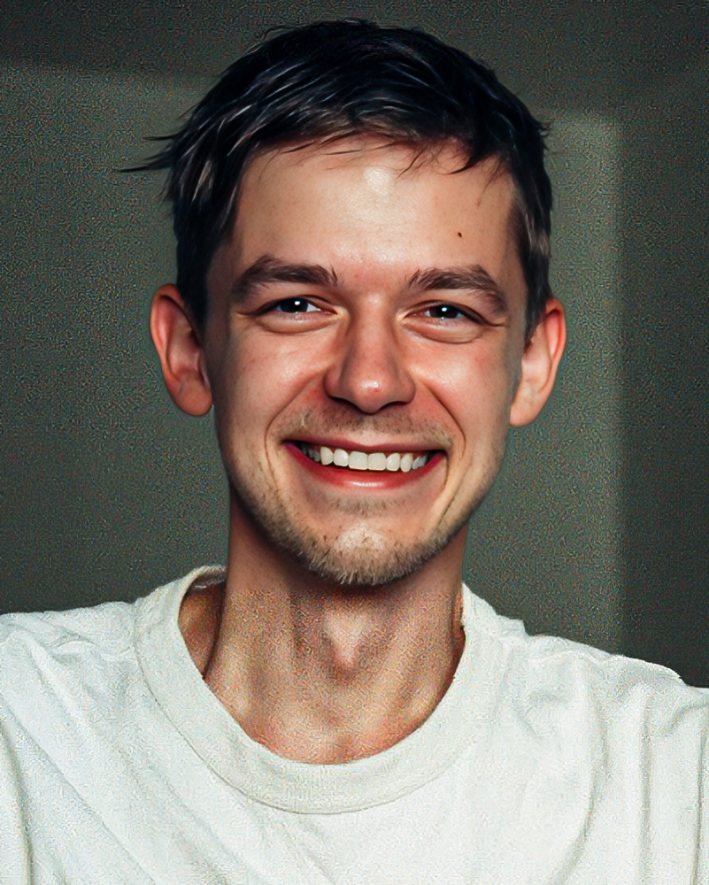

Ievgen Khalimovskyi
Founder · Creative Director
Ukraine
Founder of Kolo Kino. Writer, director and editor on every documentary. Everything you love about this channel comes from Ievgen: the storytelling, the craft, the rhythm and the look.
About Ievgen
Studied stage direction (left in his final year) and worked as a graphic designer and editor before starting Kolo Kino as a hobby in his Kiev kitchen in 2016. He still works from Ukraine, where he kept the channel running through the war with generators, batteries and laptops bought from channel revenue. The creative engine behind every Kolo Kino documentary: concept, narrative direction, editing and the visual signature that defines the channel.


 Download the full Media Kit (PDF)
Download the full Media Kit (PDF)